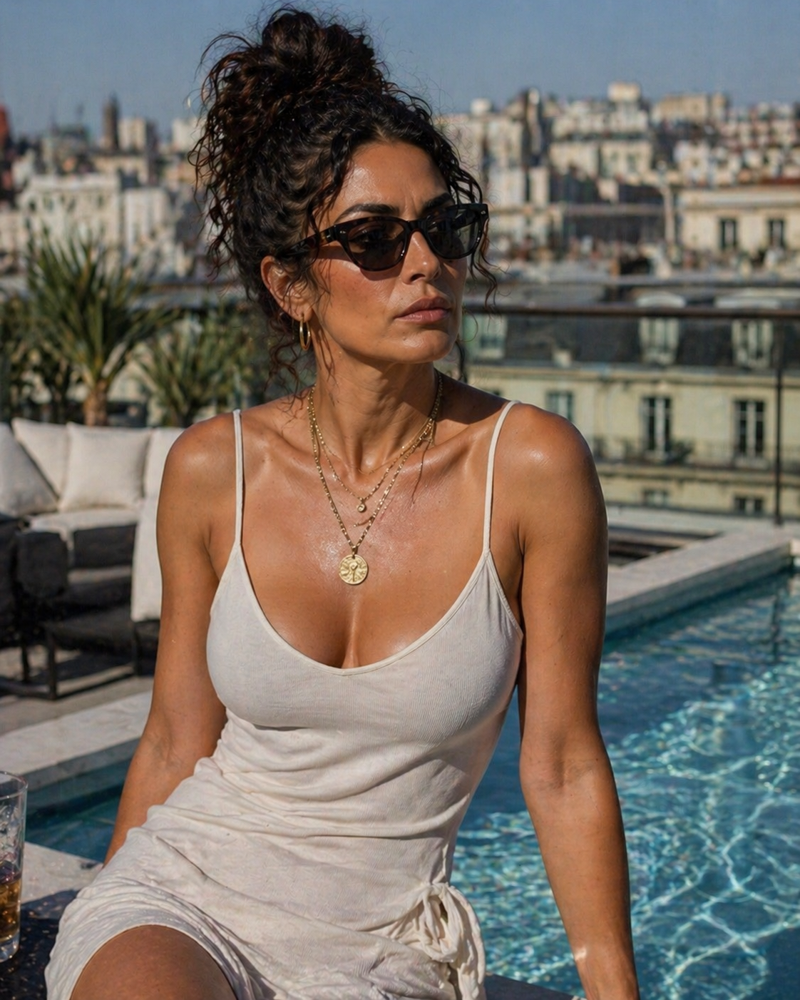
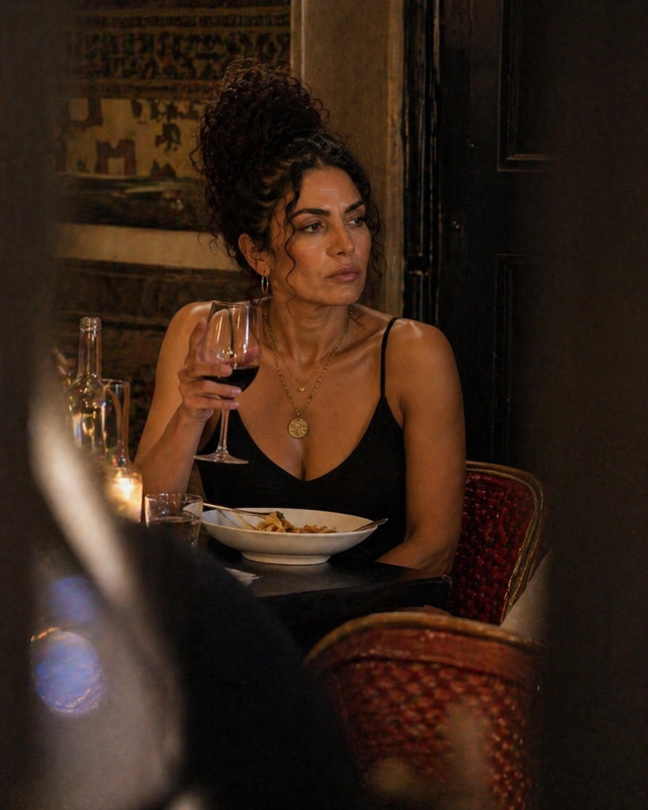
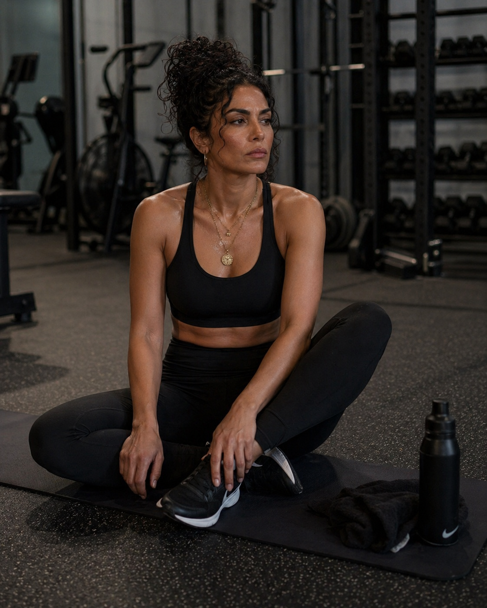
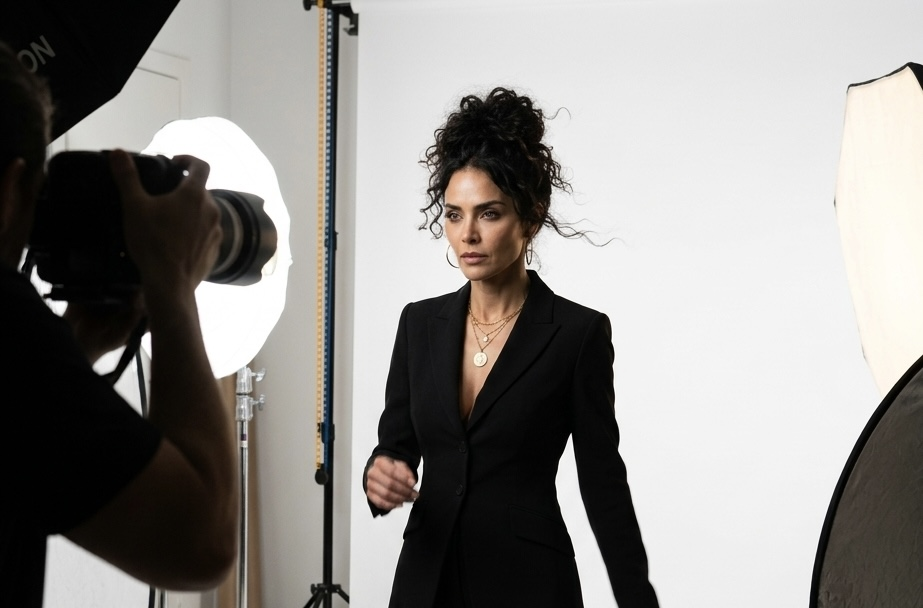

Single · Out Now
Un Beso
Sortie 1 mai 2026
Une ballade pop-latine intense et sensuelle, mêlant influences espagnoles et sonorités modernes.

Nash Record · Roster
Pop latina · Paris · Worldwide. Une voix qui passe de l'espagnol au français comme on passe d'un battement de cœur à l'autre.
Single · Out Now
Sortie 1 mai 2026
Une ballade pop-latine intense et sensuelle, mêlant influences espagnoles et sonorités modernes.
Univers visuel





Biographie
Lola Rivera grandit entre deux cultures, deux langues, deux mers. De Madrid à Paris, elle forge un univers musical où la chaleur des rythmes latins rencontre l'élégance de la production européenne.
Avec son single inaugural « Un Beso », sorti chez Nash Record en mai 2026, elle pose les bases d'un projet ambitieux : faire dialoguer la pop latina contemporaine avec une sensibilité francophone. Le morceau, mêlant guitares acoustiques et nappes électroniques, raconte l'instant suspendu d'un baiser qui efface tout.
Lola Rivera prépare actuellement un EP de cinq titres dont la sortie est prévue pour la fin de l'année. En live, elle s'entoure d'un groupe acoustique composé de musiciens latins et français, livrant des performances intimes et puissantes.
Suivre & Booker
Instagram, TikTok, YouTube — Lola y partage ses inédits, ses sessions live et ses coulisses.
Suivre sur YouTubeSpotify, Apple Music, Deezer, Tidal, Amazon — disponible sur toutes les plateformes.
Écouter sur SpotifyPour toute demande de réservation, interview, partenariat — l'équipe Nash Record répond sous 48h.
booking@nashrecord.com